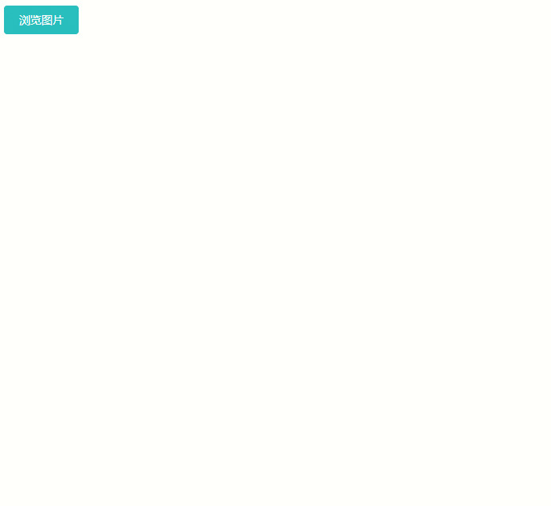

在做项目的时候我们需要从本地选择图片，并将图片显示，这次我就教用angular4怎么来实现。
一、建立指令
将图片转换成base64的代码准备写成一个指令。首先新建img-select-to-base.directive.ts，主要代码如下：
img-select-to-base.directive.ts1
2
3
4
5
6
7
8
9
10
11
12
13
14
15
16
17
18
19
20
21
22
23
24
25
26
27
28
29
| import {Directive, ElementRef, HostListener, Output, EventEmitter} from '@angular/core';
* 图片选择转换成base64
*/
@Directive({
selector: '[c-img-select-to-base]'
})
export class ImgSelectToBaseDirective {
@Output()
onLoad = new EventEmitter();
constructor(private elementRef: ElementRef) {
}
@HostListener('change')
public onChange(): any {
let files = this.elementRef.nativeElement.files;
if (files && files.length > 0) {
let file: File = files[0];
let myReader: FileReader = new FileReader();
myReader.onloadend = (loadEvent: any) => {
this.onLoad.emit(loadEvent.target.result);
};
myReader.readAsDataURL(file);
}
}
}
|
二、生成模块
新建img-select.module.ts文件，与上面的指令放到img-select文件夹下，方便管理。将图片转换成base64的代码生成一个模块，在需要使用的地方只需要引入这个模块就行了。主要代码如下：
img-select.module.ts1
2
3
4
5
6
7
8
9
10
11
12
13
14
15
16
17
18
19
20
21
22
| import {NgModule} from '@angular/core';
import {CommonModule} from '@angular/common';
import {ImgSelectToBaseDirective} from './img-select-to-base.directive';
* 图片选择模块
*/
@NgModule({
imports: [
CommonModule
],
declarations: [
ImgSelectToBaseDirective
],
exports: [
ImgSelectToBaseDirective
]
})
export class ImgSelectModule {
}
|
三、使用
1、引入模块
在需要使用的地方首先要引入这个模块，或者你直接全局引入也是可以的。
bank-list.component.ts1
2
3
4
5
6
7
8
9
| import {ImgSelectModule} from '../../../shared/components/img-select/img-select.module';
@NgModule({
imports: [
CommonModule,
BankListRoutingModule,
ImgSelectModule
],
declarations: [BankListComponent]
})
|
2、在html中使用
bank-list.component.html1
2
3
4
5
6
7
8
| <div class="col-lg-12">
<button class="btn btn-success">浏览图片</button>
<input class="image-input" type="file" id="logo" name="logo"
c-img-select-to-base (onLoad)="addLoad($event)">
</div>
<div class="col-lg-12" *ngIf="addImg">
<img [src]="addImg" alt="银行图片" title="银行图片">
</div>
|
1
2
3
4
5
6
7
| export class BankListComponent implements OnInit {
public addImg: any;
public addLoad(img): void {
this.addImg = img;
}
}
|
四、效果图

哈哈哈哈，就是为了放一张胡老师的美照镇楼，哈哈哈哈哈~~~